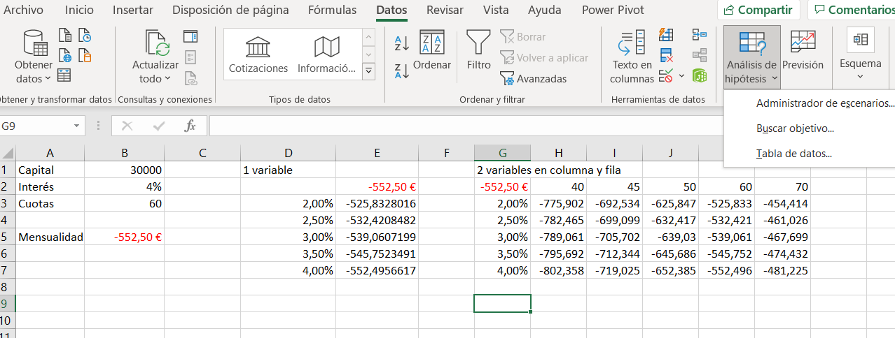
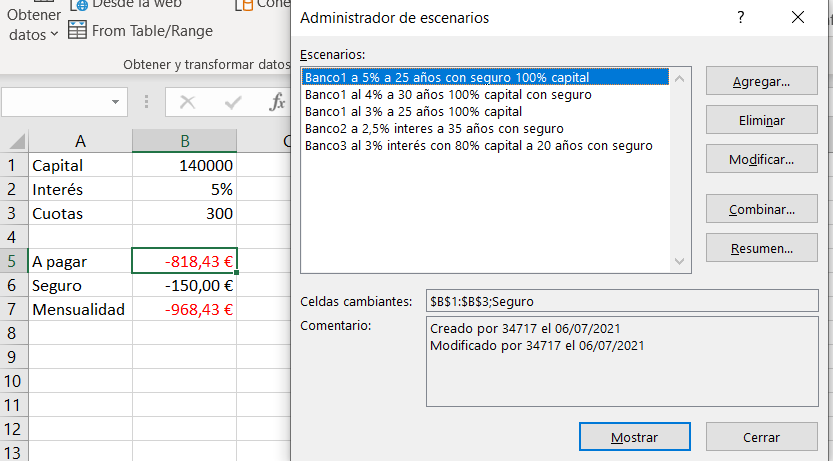
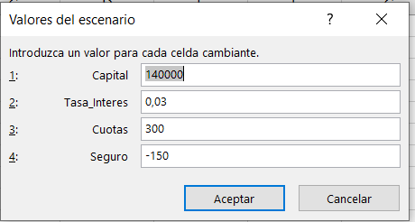
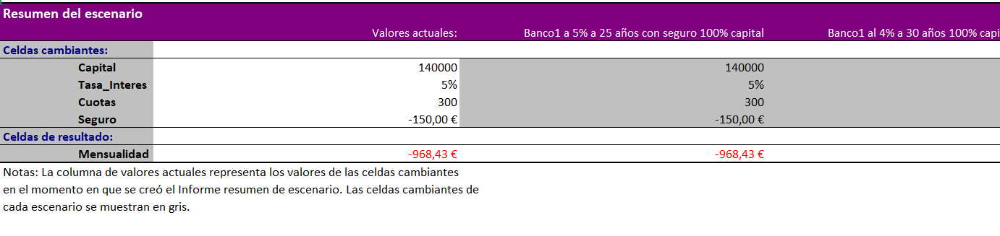

EXCEL HERRAMIENTAS ANÁLISIS
//TABLAS DE DATOS
Funcion Pago() 5 parámetros
Herramientas de Analisis: Datos > Análisis de Hipótesis> Tabla de datos
se coge el dato de la tabla principal y se selecciona en fila o columna, en este caso en columna
Tablas de datos de dos variables:
se ponen datos tanto en la variable columna como en la de fila, de las celdas de la columna con dato para la fila y la columna

//ESCENARIOS
Mas potentes, se pueden ver resultados cambiando muchas celdas
Crear:
Datos > análisis de hipótesis > Administrador de escenarios
Se pone un nombre cualquiera, y luego se establecen las celdas cambiantes
Se pueden crear varios estableciendo los distintos valores
Visualizar los escenarios: Datos > análisis de hipótesis > Administrador de escenarios
Elegimos el que queramos y le damos a mostrar
Recomendable darle nombre a las celdas, para crear un informe / resumen de escenarios
Simplemente seleccionar celda y arriba a la izquierda donde está el nombre lo añadimos


Boton Resumen:
Crea hoja aparte con el resumen /informe con todas las opciones
Tabla dinámica

Aplicar escenarios de una hoja a otra
copiar tabla de una hoja y ponerla en la misma celda de otra
Administrador de escenarios -> Combinar
Casillas de proteccion:
Evitar cambios Revisar > Proteger hoja > Establecer contraseña de proteccion
Ocultar: para que no los vean otras personas
//BUSCAR OBJETIVO
Datos > análisis de hipótesis > BuscarObjetivo
Da resultado si es posible
1.Definir la celda: el resultado, exige que tenga una fórmula
2.Con el valor: el valor que quiero
3.Cambiando la celda: el valor total
Problema: si no se pueden encontrar ciertas tablas, quizás no obtenga resultados. Para eso se usa solver
// SOLVER
Hay que descargarlo Archivo > Opciones > Complementos > Administrar Complementos Excel / Ir a > Click en Solver y aceptar
Datos > Solver
Valor De
Max
Min
Guardar escenario
Puedes crear uno para el coste minimo el coste máximo, etc.

//